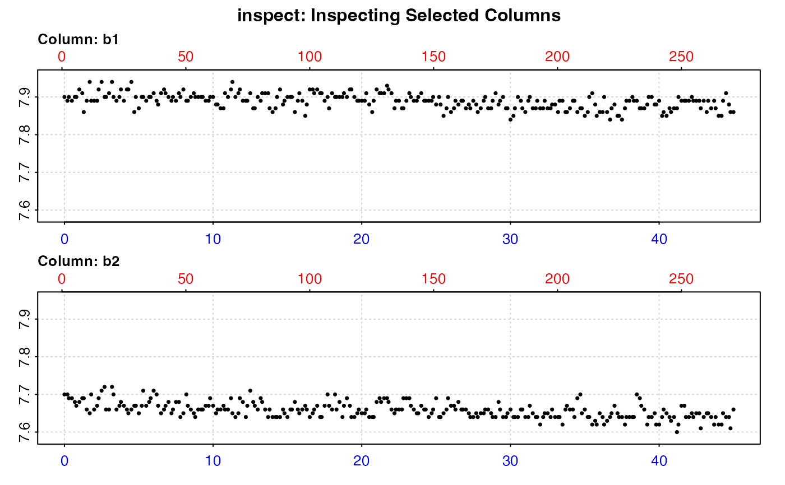

This function calculates the rate of change of oxygen over time from "blank"
or control respirometry experiments, to allow for background adjustments of
experimental data. It accepts background oxygen~time data as data frames and
inspect objects. The data must be in the same time and oxygen units as the
data from which the rate which will be adjusted was extracted. Multiple
columns of background oxygen measurements can be entered as long as they
share the same time data. In this case the function returns rates for all
columns, and also calculates a mean rate.
calc_rate.bg(x, time = NULL, oxygen = NULL, plot = TRUE, ...)data.frame or inspect object. This is the data to extract
background rate(s) from.
integer. Defaults to 1. This specifies the column number of the time data.
integer value or vector. This specifies the column number(s) of
the oxygen data. Multiple columns of oxygen can be specified. If NULL,
function assumes oxygen data are in all columns of the data frame except
the time column.
logical. Defaults to TRUE. Plots the data. See Details.
Allows additional plotting controls to be passed, such as pos,
legend = FALSE, and quiet = TRUE.
Output is a list object of class calc_rate.bg containing original
data, linear models, summary information, and the primary output of
interest $rate.bg, which contains a rate for each oxygen column present
in the input data. There is also $rate.bg.mean containing the mean of all
background rates. Note, this is not used in adjust_rate, where the
method input there determines how $rate.bg is applied, but can easily
be extracted and applied as an adjustment value if desired.
The main difference between calc_rate.bg and calc_rate, is that this
function allows a rate to be determined from the same region of multiple
oxygen data columns, whereas calc_rate allows multiple rates to be
determined from different regions of a single dataset.
There are no units involved in calc_rate.bg. This is a deliberate decision.
The units of oxygen concentration and time will be specified later in
convert_rate() when rates are converted to specific output units. It is
important however, the background time~oxygen data is in the same time and
oxygen units as the data used to determine the rate which will be adjusted.
calc_rate.bg does not have internal subsetting of data regions. If you need
to subset the data to specific regions you don't want to use, see
subset_data(), which allows for easy passing (or piping) of subsets to
calc_rate.bg.
Most users will be using this function to account for background oxygen
consumption rates from microbial activity that need to be quantified and
their effects removed from experimental specimen rates. However, there are
some experiments where oxygen input rates may be of interest, for example
in open tank or open arena respirometry where the input of oxygen from the
water surface has been calculated or quantified. There are also cases in
closed respirometry where there may be an input of oxygen via leaks or oxygen
production from photosynthesis which need to be quantified. calc_rate.bg is
readily capable of quantifying production rates as well as consumption, and
these can also be used for adjustments in adjust_rate().
A plot is produced (provided plot = TRUE) showing all examined columns of
oxygen against time (bottom blue axis) and row index (top red axis), with the
rate and linear model coefficients. Single rates can be plotted by changing
the pos input either in the main function call, or by plotting the output,
e.g. plot(object, pos = 2). Console output messages can be suppressed using
quiet = TRUE. If equations obscure the plot they can be suppressed using
legend = FALSE.
Saved output objects can be used in the generic S3 functions print(),
summary(), and mean().
print(): prints all background rates, plus the mean background rate.
summary(): prints summary table of all results and metadata, or those
specified by the pos input. e.g. summary(x, pos = 1:5). The summary can
be exported as a separate dataframe by passing export = TRUE.
mean(): calculates the mean of all rates, or those specified by the pos
input. e.g. mean(x, pos = 1:5) The mean can be exported as a separate value
by passing export = TRUE.
For additional help, documentation, vignettes, and more visit the respR
website at https://januarharianto.github.io/respR/
# \donttest{
# Inspect and calculate background rate from two columns
inspect(urchins.rd, time = 1, oxygen = 18:19) %>%
calc_rate.bg()
#> inspect: Multiple 'oxygen' columns selected. Note that subsequent functions in respR will by default use first oxygen column only.
#> Warning: inspect: Time values are not evenly-spaced (numerically).
#> inspect: Data issues detected. For more information use print().
#>
#> # print.inspect # -----------------------
#> time.min b1 b2
#> numeric pass pass pass
#> Inf/-Inf pass pass pass
#> NA/NaN pass pass pass
#> sequential pass - -
#> duplicated pass - -
#> evenly-spaced WARN - -
#>
#> Uneven Time data locations (first 20 shown) in column: time.min
#> [1] 1 2 3 4 5 6 7 8 9 10 11 12 13 14 15 16 17 18 19 20
#> Minimum and Maximum intervals in uneven Time data:
#> [1] 0.1 0.2
#> -----------------------------------------
#> calc_rate.bg: Applying column default of 'time = 1'
#> calc_rate.bg: Applying column default of all non-time column(s) as 'oxygen'

#>
#> # plot.calc_rate.bg # -------------------
#> plot.calc_rate.bg: Plotting all 2 background rates ...
#> -----------------------------------------
#>
#> # print.calc_rate.bg # ------------------
#> Background rate(s):
#> [1] -0.0007650013 -0.0009018607
#> Mean background rate:
#> [1] -0.000833431
#> -----------------------------------------
# Same example but enter as a data frame, save as an object and use
# in adjust_rate
bg_rate <- calc_rate.bg(urchins.rd,
time = 1,
oxygen = 18:19,
plot = FALSE)
inspect(urchins.rd, 1, 2, plot = FALSE) %>%
calc_rate(from = 10, to = 30, by = "time", plot = FALSE) %>%
adjust_rate(by = bg_rate)
#> Warning: inspect: Time values are not evenly-spaced (numerically).
#> inspect: Data issues detected. For more information use print().
#>
#> # print.inspect # -----------------------
#> time.min a
#> numeric pass pass
#> Inf/-Inf pass pass
#> NA/NaN pass pass
#> sequential pass -
#> duplicated pass -
#> evenly-spaced WARN -
#>
#> Uneven Time data locations (first 20 shown) in column: time.min
#> [1] 1 2 3 4 5 6 7 8 9 10 11 12 13 14 15 16 17 18 19 20
#> Minimum and Maximum intervals in uneven Time data:
#> [1] 0.1 0.2
#> -----------------------------------------
#> adjust_rate: The 'by' input contains multiple background rates. The mean value will be used to perform adjustments.
#> adjust_rate: Rate adjustments applied using "mean" method.
#>
#> # print.adjust_rate # -------------------
#> NOTE: Consider the sign of the adjustment value when adjusting the rate.
#>
#> Adjustment was applied using the 'mean' method.
#>
#> Rank 1 of 1 adjusted rate(s):
#> Rate : -0.02858739
#> Adjustment : -0.000833431
#> Adjusted Rate : -0.02775395
#>
#> To see full results use summary().
#> -----------------------------------------
# Subset single column data first before calculating background rate
subset_data(background_con.rd, from = 5000, to = 20000, by = "time") %>%
calc_rate.bg()
#> calc_rate.bg: Applying column default of 'time = 1'
#> calc_rate.bg: Applying column default of all non-time column(s) as 'oxygen'
#>
#> # plot.calc_rate.bg # -------------------
#> plot.calc_rate.bg: Plotting all 1 background rates ...
#> -----------------------------------------
#>
#> # print.calc_rate.bg # ------------------
#> Background rate(s):
#> [1] -0.0001143112
#> Mean background rate:
#> [1] -0.0001143112
#> -----------------------------------------
# }